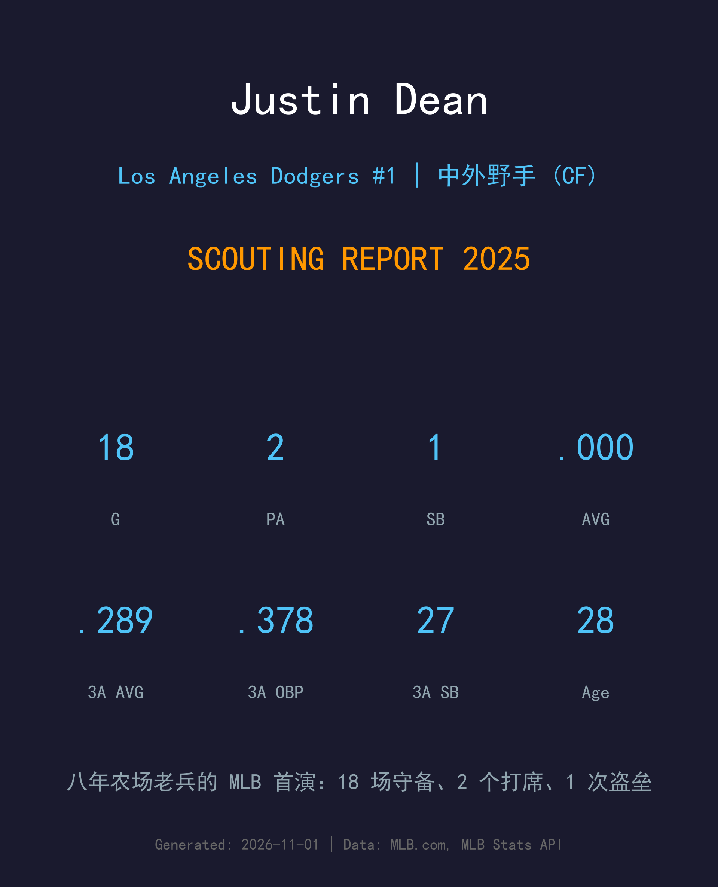
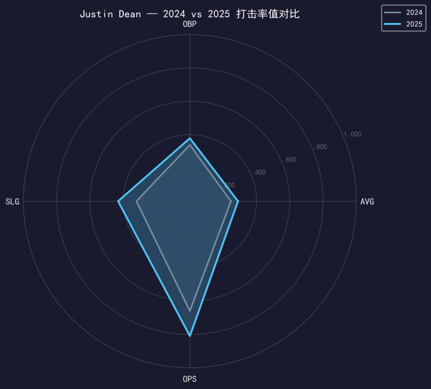
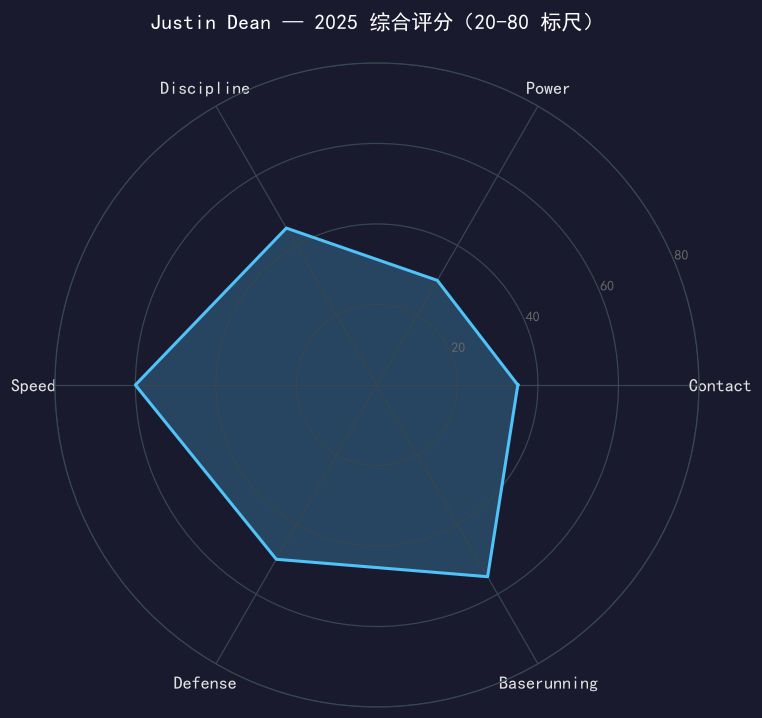

Los Angeles Dodgers #1 | 中外野手 | 右打 | 八年农场 255 盗，18 场守备专员的大联盟首演

⚠️ 小样本警告：本报告基于 18 场出赛、但仅 2 个打席的数据——他 2025 年的价值几乎全部写在守备栏和跑垒栏里。
Justin Dean 的大联盟首演是 2025 年最纯粹的「功能性登场」：18 场出赛只有 2 个打席——场均 0.11 PA，这是纯正的守备置换与代跑角色。8 月 8 日道奇从 OKC 选入他时，需要的不是他的棒子，而是他 5'8"、185 磅身体里那台装了八年的小联盟盗垒引擎（生涯 255 盗）。
他用行动证明了工具的即插即用：2 个打席里没有安打，但那 唯一一次盗垒尝试成功了。而在 OKC 的 90 场，他刚刚打出农场生涯最好的一季——.289/.378/.431、27 盗、90 场，上垒率与长打率双双创个人新高。这份进步是他 8 月那张机票的真正票价。
从 2025 年 11 月的视角看，Dean 的故事在赛季末翻到了意外的篇章：11 月 6 日，旧金山巨人从 waiver 线上把他认领走——八年道奇体系生涯就此画上句号，而北加州成了他大联盟生涯第二章的第一页。28 岁的速度型外野，最好的年华恰好刚刚开始。
A+ Rancho Cucamonga 109 场 47 盗——单季 47 次盗垒成功让他的名字第一次出现在道奇农场观察名单的「速度」栏置顶。
奥克拉荷马城 117 场 61 次盗垒——3A 级别的盗垒机器全速运转，这几乎是一张写着「请给我 MLB 机会」的申请表。
8 月 8 日登上大联盟，18 场守备专员出赛，2 PA 0 安打、1 次盗垒成功——数据行很短，但每一项都是八年磨一剑的收据。

| 赛季 | 层级 | G | PA | AVG | OBP | SLG | OPS | HR | RBI | BB | SO | SB |
|---|---|---|---|---|---|---|---|---|---|---|---|---|
| 2024 | 3A | 117 | 452 | .247 | .338 | .321 | .659 | 3 | 38 | 51 | 122 | 61 |
| 2025 | 3A | 90 | 347 | .289 | .378 | .431 | .809 | 6 | 33 | 39 | 82 | 27 |
| 2025 | MLB | 18 | 2 | .000 | .000 | .000 | .000 | 0 | 0 | 0 | 1 | 1 |
两年 3A 数据是他故事的正文：2024 年他用 61 盗证明速度工具是 80 级，但 .247/.321 的打击剖面只是「跑得快的 depth」；2025 年他把自己升级成了「会打球的跑者」——AVG +42 点、OBP +40 点、SLG +110 点，82 次三振比 2024 年少 40 次。道奇 8 月 8 日的那张机票，奖励的正是这个跳跃。至于 MLB 行的 2 个打席——那是门票存根，不是成绩单。
18 场 2 PA 的出场结构在大联盟极为罕见：每一场比赛他都在六七局之间走进中外野，替下先发，然后用速度把外野的防守半径扩大五英尺。道奇在赛季后段领跑国联，外野守备的每一分价值都被放大——Dean 的 18 场就是这种「边际增益」的真人化身。他没有打席，但他守护的每一球都是道奇冠军方程的一部分。
255 次小联盟盗垒让 Dean 拥有「退役后讲给孙子听」的资本，但速度型球员的真正考题是「上垒率能否支撑工具兑现」。他的答卷曲线堪称教科书：2019 年 47 盗时 OBP .386（A+ 层级），2023 年 OBP 掉到 .339 盗数 35，2024 年 .338/61 盗，2025 年 .378/27 盗——盗数下降不是退步，而是打席更值钱后的自然选择——28 岁的他的速度保鲜期还有约 3-4 年，而 2025 年 .378 的 3A OBP 是他职业生涯最值钱的一行数据。
11 月 6 日，旧金山巨人从 waiver 线认领了他——对八年道奇老兵来说，这是职业生涯最五味杂陈的一天。但换个角度看：巨人的外野在过去两年以「速度洼地」闻名，Dean 的工具箱在 Oracle 球场的大外野里反而能放大价值。而且巨人给 speed-first 球员的历史待遇极好（从 Bonds 时代的 Kenny Lofton 到近年的 Luis Matos）。他的第二章，可能比第一章精彩。

八年磨一剑的盗垒引擎，北上的新篇章
C+ 级 / 第四外野与守备专员
道奇 2025 季后赛夺冠之路：外卡 2-0 红人 → NLDS 3-1 费城人 → NLCS 4-0 酿酒人 → 世界大赛 4-3 多伦多蓝鸟。
Dean 没有出现在季后赛任何一场 boxscore 里——他的 18 场常规赛已经完成了使命：让道奇的外野在 162 场马拉松里保持新鲜，直到十月可以全速冲刺。冠军之夜他身在名单之外，但 9 月 29 日那次扩编召回（让主力在收官周轮休）就是他给冠军队最后的礼物。11 月 6 日的巨人认领书，则是联盟对他这 18 场的正式签名。
Dean 的 2026 年从旧金山春训开始，剧本比大多数 waiver 认领者乐观：巨人的外野名单有真实缺口，他的速度 + 守备 + 选项年弹性完美贴合「替补中外野」的岗位描述。理想路径是复制 2025 年的角色（守备专员 + 代跑），在零星打席里证明 3A 的 .289 不是幻影，然后等待一次伤病窗口把「专员」升级为「轮换」。28 岁的盗垒者，故事刚刚翻页。
理想剧本：巨人替补 CF 站稳，.250/.340 + 30 盗
现实基准：3A 与大联盟之间往返，季后赛 roster 边缘
下行风险：三振率在 MLB 级别放大，退回纯代跑角色
Justin Dean 来自南卡罗来纳州格林维尔郊外的 Mauldin，2018 年进入道奇农场体系。小联盟年鉴里的他是一条盗垒曲线：2019 年 A+ 单季 47 盗，2021-2023 年每年 24-35 盗，2024 年在 OKC 把数字推到 61——八年累计 255 次盗垒成功，这是道奇农场近十年没人做到的耐力型壮举。
但盗垒机器也知道自己的短板：他的打击剖面常年是「.230-.250 的 AVG + 不错的 OBP」，离 MLB 门槛始终差一口气。2025 年，他把这一口气补上了——90 场 .289/.378/.431，OPS 一年暴涨 150 点。8 月 8 日，道奇把这张成绩单兑现成一张大联盟机票。
2025 年 11 月的 Justin Dean 刚被旧金山巨人认领。从 Mauldin 到洛杉矶到旧金山，他的棒球地图像他的跑垒路线一样：永远弯向下一個垒包。八年 255 盗教会他的最后一课是——盗垒者的时钟不在于年龄，而在于起跳的勇气。28 岁，正是起跳的好年纪。